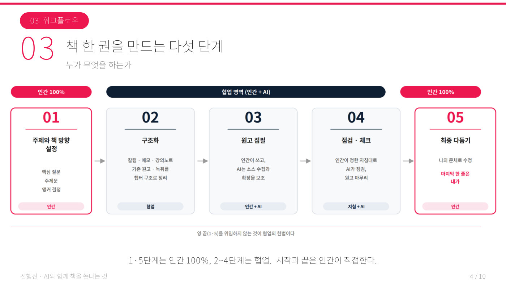

발표자는 30년 가까이 방송을 만들어 온 전문가로, 무분별한 미디어가 사회를 양극화시키는 것을 현장에서 지켜봤다. 그래서 AI 시대의 리터러시(보고, 이해하고, 설명하고, 올바로 사용하는 힘)에 대한 책을 쓰기로 했다. 처음 전략은 단순했다. 남들보다 빨리 AI를 이용해 쉽게 책을 쓰자는 것이었고, 실제로 탈고(원고를 다 써서 마무리하는 것) 직전까지 갔다. 그런데 이 과정에 들어와 보니 자신이 알던 AI는 넓은 바다의 조각배 수준이었다는 충격에 집필을 멈췄다. 결정타는 중간발표에서 심사위원이 던진 한마디였다. "AI가 쓰지 않았습니다"라고 말하는 것이 이 책의 셀링 포인트가 돼야 하지 않겠느냐는 것이었다.
발표자는 책 만들기를 다섯 단계로 나누고 역할의 경계를 다시 그었다. 처음의 설계와 마지막의 최종 문장은 인간이 100% 담당하고, 중간의 자료 조사와 점검만 AI와 협업하는 방식이다. AI인 클로드에게는 자료조사 비서, 교열자, 출판사 기획자, 가이드 점검자라는 네 가지 직업을 나눠 주고, 책의 핵심 문장과 협업 규칙을 AI의 메모리에 새겨 새 대화를 열어도 자동으로 지키게 했다. 구글 드라이브를 MCP(AI를 다른 프로그램과 연결해 주는 표준 통로)로 연동하자 클로드가 10년치 칼럼, 메모, 강의 노트를 다 뒤져 "당신은 이미 10년 전부터 이 책을 준비하고 있었군요"라고 답한 순간이 가장 놀라웠다고 한다. 원고는 노션(온라인 문서 도구)에 버전별로 쌓여, 주제에서 벗어나면 즉시 알림을 받고 중복된 내용은 자동으로 걸러졌다.
6개월 만에 4부 16챕터, 200~250페이지 분량의 책 「AI시대, 인간으로 생각한다는 것」의 골격이 완성됐다. 초고를 받은 출판사는 "이 정도면 할 일이 없다"며 통상 6~7%인 인세(책이 팔릴 때마다 작가가 받는 몫)를 10%로 올려 계약했다. 혼자라면 읽고, 메모하고, 찾고, 옮기고, 잊어버리고, 다시 하는 전 과정을 반복해야 했지만 이 모든 것을 AI가 도와주니 처음 쓰는 책인데도 혼자 다 해낼 수 있었다. 발표자는 포토샵도 그리는 사람에 따라 그림이 다르듯 AI도 어떻게 쓰느냐에 따라 결과가 달라진다고 정리했고, 다음 책 「AI 시대 살아남는 길은…」까지 이미 기획하고 있다.